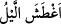

durmadan yaşaran ve görmesi zayıf olan kimse demektir. Allah Teâlâ, herhangi bir
kimsenin görmesini kararttığında bunu ifâde etmek için: “/
ağtaşahullahu” ifâdesi
kullanılmaktadır. Buna göre; “/
ağtaşa’l-leylu” ifâdesi “gece karardı” demektir.
Bu fiil hem müteaddi, hem de lazımdır. Ancak burada kastolunan birincisidir. Yani;
Allah Teâlâ göğün gecesini ışığı gitmiş karanlık bir hale getirmiştir.
Burada şöyle bir soru sorulabilir: “Leyl”, güneşin batması sebebiyle meydana gelen
karanlık zamanı demektir. Âyette ise “onun gecesini kararttı” buyrulmaktadır. Bu anlam
üzerinde düşündüğümüzde ifâdenin mânâsı; “Allah zaten karanlık olan geceyi karanlık
kıldı” demek gibi olmaz mı? Bu ise uzak bir ihtimal değil midir? Biz bu soruya şöyle
cevap verebiliriz: İşaret edilen zamanda meydana gelen karanlık ancak Allah’ın tedbiri
ve takdiri sâyesinde olmaktadır. Dolayısıyla burada anlaşılmayacak çelişkili bir durum
yoktur.
“Gündüzünü ağarttı.” Yani Allah Teâlâ onun gündüzünü ortaya çıkarttı. Burada
dikkat edilince görüleceği üzere “gündüz” anlamı, güneşin ışığı anlamına gelen “duhâ”
kelimesiyle ifâde olunmaktadır. Duhâ vakti, güneşin doğduğu ve etkisini güçlü biçimde
gösterdiği kuşluk vaktidir. O halde gündüzün “duha” kelimesi ile ifâde olunması
sebebsiz değildir. Çünkü duha vakti, güneşin vakitleri içinde en şereflisi ve en hoşudur.
Bu isimlendirme, mahalle ona inen en şerefli şeyin isminin verilmesi şeklinde
olmaktadır. Şu halde Allah Teâlâ’nın bizlere nimetini sıralamış olduğu bir yerde
“duha”nın zikredilmesi, cümlenin gelişine daha uygun düşmektedir. Âyette
“duha/kuşluk” kelimesinin “leyl/gece” kelimesinden geriye bırakılmasının ve gündüzün
meydana getirilişinin “ihraç/çıkarma” kelimesiyle ifâde edilmesinin ardında yatan sır
budur. Çünkü karanlığın ardından nur kelimesinin gökyüzüne izâfe edilmesi ve “göğün
karanlığı” dendikten sonra “göğün nuru” denmesi, nimet bakımından daha mükemmel ve
ihsan açısından daha kâmil bir nimet tablosu çizmektedir.
“Gece ve duha” kelimelerinin gökyüzüne izâfe edilerek; “göğün gecesi ve göğün
gündüzü” denmesi, bunların birbirini izlemeleri ve bunların göğün hareketine bağlı
olmalarından dolayıdır. Kendisine izâfet yapılan “sema/gök” kelimesi ile “gece ve
gündüz” kelimeleri arasındaki ilişkiye gelince, bunların arasında gündüz ile gece
kelimesinin gök kelimesi ile aralarındaki en ufak ilişki izâfet için yeterlidir.
“Duha” kelimesinin “gök” kelimesine izâfe edilerek “göğün gündüzü” denmesi,
“güneş” kelimesinin araya katılması sûretiyle de olabilir. Buna göre ifâdeyi takdir
edersek şöyle denmiş olur: “O göğün güneşinin ışığını çıkardı.” Burada, “güneş”
kelimesinin “duhâ” kelimesiyle ifâde olunması, duhâ yâni kuşluk vaktinin, güneşin
etkisinin ortaya çıktığı ve parlaklığının kemâle erdiği vakit olmasından dolayıdır.
İmam Zâhid buyurdu ki: Dünyanın gündüzü ve gecesi, dönen güneş ve ayın
yaratılması sebebiyle gökyüzüyle ortaya çıktı, âşikâr oldu.
Âriflerden birisi şöyle der: Arapçada “leyl/gece” kelimesi müzekker, “nehâr/gündüz”
kelimesi ise müennestir. Gece gündüzü örtüp bürüyünce gündüz hâmile kalmış ve
doğum yapmıştır. Gündüzün bu şekilde doğumuyla bütün varlık alemi zamanın örtüsünü